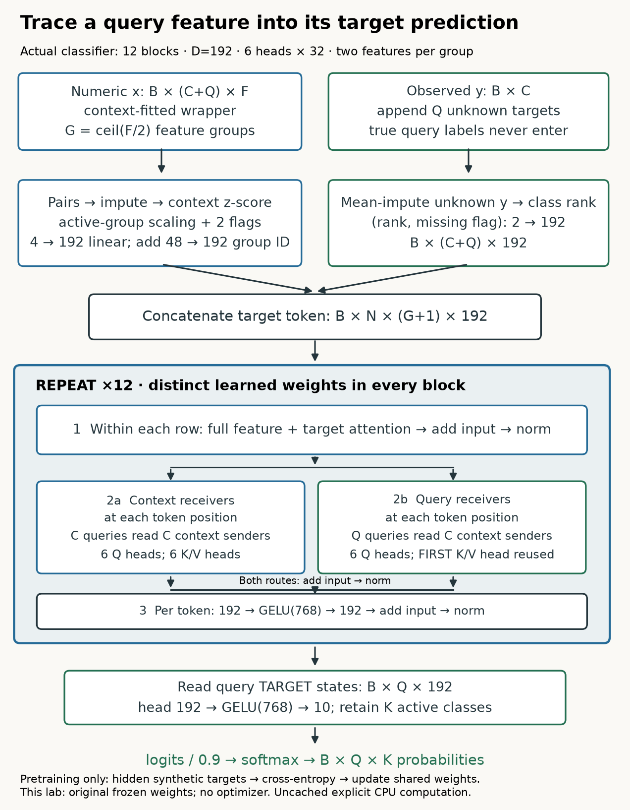

Built with TabPFN · Prior Labs License
Historical v2: shapes, boundaries and evidence

Shape and computation card¶
F features → ceil(F/2) paired groups; add one target token. Hidden shape B×(C+Q)×(G+1)×192. Twelve blocks: within-row feature attention, context-only row attention, GELU 192→768→192 MLP; every sublayer adds its input before non-affine LayerNorm. Six 32-wide heads. Context receivers use all K/V heads; query receivers reuse first-head context K/V with six distinct Q projections. Query target readout → GELU head 192→768→10 → active classes → temperature 0.9 → softmax.
Feature encoder: two normalized values plus two flags →192, no bias. NaN flag−2. Group IDs: random48→learned192. Unknown target: rank of context-mean-filled label plus flag−2; not always zero. Default four-view classification averages probabilities after undoing class permutations. The live experiment deliberately uses a simple one-view numeric recipe.
Information boundary¶
A correct attention mask guarantees isolation only with encoded tokens fixed. A partly missing constant context feature can survive raw constant filtering; after imputation, the historical all-row used count can change when an extra query varies that channel. This changes earlier encoded inputs. The finite-constant control and fixed-token stack control isolate the cause. Cached versus uncached parity is not assumed.
Live operations¶
def group_features(x,group_size=2):— Pad only the feature axis and return B×N×ceil(F/g)×g. Validate the input rank and positive group size.def encode_targets(y,total_rows):— Return B×N×2 target-rank and missing-flag inputs, given observed B×C labels only.def attention_mix(q,k,v):— Compute rectangular scaled dot-product attention over sender positions, allowing a single K/V head to broadcast.def row_attention(h,n,attention):— Transpose B×N×(G+1)×D into group sequences; compute context MHA and query first-head-KV MQA; return original layout.def postnorm_update(h,update):— Return non-affine LayerNorm of the incoming token plus its sublayer update, with epsilon 1e-5.
Reproduction ledger¶
Verified: full checkpoint forward/input/all 81 parameter gradients; five complete simple numeric-wrapper cases; actual default four-view network bridge; fresh full-data observed/shuffled inference on three datasets and three split seeds; a complete-wrapper query counterexample. The default bridge borrows peripheral release preprocessing. Not verified: original prior training, full paper benchmark, optimized caching parity, live Colab, deployment (tracked separately).
New measured predictions · Source checks · Independent release query-boundary audit · Sources · Reproduction contract.